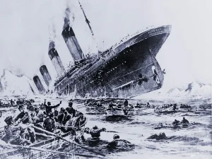

Titanik’in Batmayacağını Gerçekten Düşünen Var mıydı?
Titanik’in büyük ironisinin hikayesini muhtemelen biliyorsunuzdur. “Batmaz” olarak selamlanan gemi, Atlantik Okyanusu’ndaki ilk yolculuğunda bir buzdağına çarptıktan sonra battı. Geriye dönüp bakıldığında, 50.000 tondan daha ağır bir geminin (tam yüklü haldeyken) batmayacağını düşünmek neredeyse aptalca görünüyor. Ve gerçekten de pek çok efsane avcısı, batmadan önce çok az kişinin gemiye “batmaz” dediğini iddia etmiştir. 
{kind=link}
İnsanların geminin hiçbir koşul altında kesinlikle batmayacağını düşünüp düşünmediklerini söylemek zor olsa da, insanların yolcu gemisinin güvenlik tasarımının (Thomas Andrews tarafından) son teknoloji ürünü olduğuna inandıkları ve bazılarının daha yola çıkmadan gemiyi “batmaz” olarak tanımladıkları açıktır. Bildirildiğine göre bu iddia, gemi gerçekten batarken bile birçok yolcuyu sakin tutmaya yetmiştir. Yolculuktan sorumlu şirketin bir başkan yardımcısı ABD Kongresi’ne, geminin battığı yönündeki haberlere başlangıçta inanmadığını çünkü geminin batmaz olduğunu düşündüğünü söyledi.
Geminin batmaz olduğu fikri, gazete ve dergi makalelerinin yanı sıra nakliye şirketinin reklam materyalleri tarafından da ileri sürülmüştür. Yaygın olarak dağıtılan makalelerde geminin tasarımı ve teknolojik açıdan gelişmiş güvenlik özellikleri ayrıntılı olarak anlatılıyordu. Bu özelliklerin başında gövde içinde bulunan ve kapıları bir düğmeye basılarak kapatılabilen 16 bölme geliyordu. Kompartımanlardan herhangi birinin delinmesi halinde hızlı bir şekilde kapatılabilmesinin, hasar görse bile gemiyi yüzer halde tutabileceğine inanılıyordu.
Kimsenin geminin batmaz olduğunu düşünmediğini iddia etmek abartılı olsa da, Titanik batmadan önce insanların geminin batmaz olup olmadığıyla pek ilgilenmedikleri doğru olabilir. Titanik’in satış noktası gerçekten de ihtişamı ve lüksüydü, güvenliği değil. Titanik’le ilgili makale ve reklamların çoğu, tasarımının ayrıntılarına değil, büyüklüğü ve konaklama yerlerine odaklanıyordu ve gemiye binen varlıklı yolcular onu prestij ve konforu için seçmişti. “Batmaz” lakabı ancak geminin ölümünden sonra, muhtemelen dramatik bir etki yaratmak amacıyla ortaya çıkmıştır. Yani gemi aslında batmadan önce “batmaz” olarak lanse edilmiş olsa da, aslında bu iddiayı ön plana çıkaran trajik batışının ironisiydi.